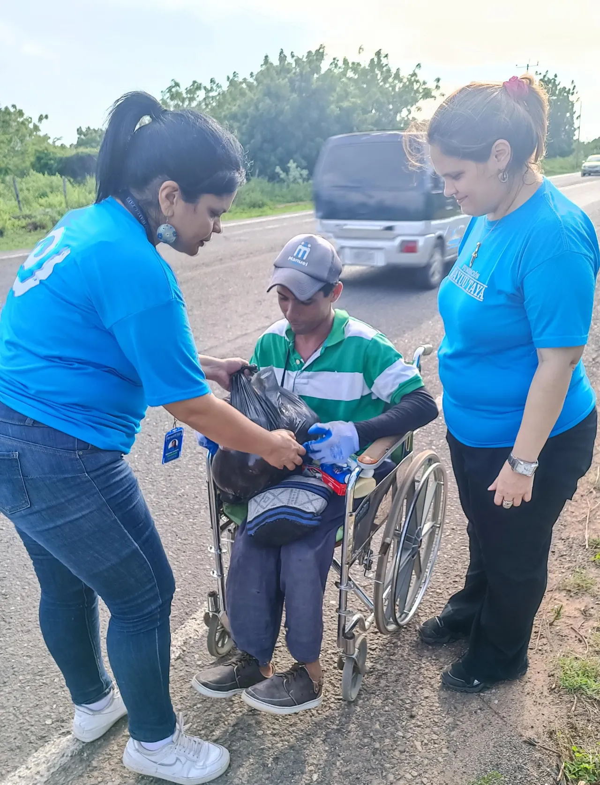
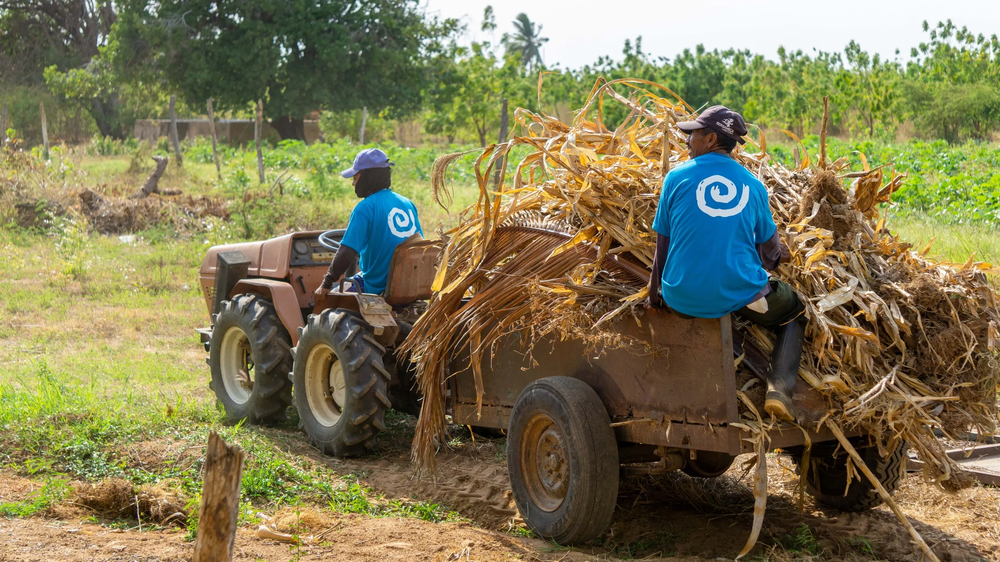

News & Updates
The latest stories, milestones, and announcements from the Wayuu Taya Foundation.
 Urgent
Urgent
Venezuela Earthquake Emergency Response
A devastating double earthquake (magnitudes 7.2 and 7.5) has struck northern Venezuela, causing widespread destruction across Caracas and surrounding states. Homes have collapsed, critical infrastructure has been damaged, and thousands of people have been displaced.
The Wayuu Taya Foundation, together with CORE Response and Acceso, has mobilized an urgent joint response — providing emergency food, safe drinking water, medical supplies, hygiene kits, and temporary shelter to help families survive the crisis and begin rebuilding their lives.
Donate to Relief Efforts →Timeline of Impact

Joint Emergency Response with CORE & Acceso
Following twin earthquakes measuring 7.2 and 7.5 magnitudes — the most powerful to hit Venezuela in over a century — the Foundation partnered with CORE and Acceso to deliver emergency food, clean water, medical supplies, shelter, and hygiene kits. Direct Relief prepared medical aid shipments for the Foundation to distribute across affected communities.

Continuing Impact Across Communities
Access to education, health, culture, and nutrition continued bringing meaningful change to the lives of the communities we serve. The Foundation expanded outreach across food distribution, medical supplies, water access, and educational programs during the first half of 2026.

Spring Gala 2025 at Chelsea Industrial
The Wayuu Taya Foundation's annual Spring Gala was held at Chelsea Industrial in New York City. The evening brought together supporters, artists, and advocates to celebrate the Foundation's mission and raise funds for ongoing programs, featuring performances by the New York Philharmonic and the Amarcuaco Quartet.

Empowering Wayuu Women as Community Pillars
The Foundation continued its commitment to empowering Wayuu women as pillars of family and community well-being, through a series of educational and health-focused initiatives including artisan training at Shukumajaya, family planning, nutrition, and hygiene counseling.

Music as a Tool for Healing and Connection
Music continued to serve as a powerful tool for connection, expression, and healing — bringing people together, helping children find their voice, and creating joy in the communities we serve. The Intercultural Orchestra Program expanded its reach with El Sistema.

20th Anniversary Gala
The Foundation celebrated 20 years of service with a special anniversary gala at the Urban Zen Center at Stephan Weiss Studio in New York City, honoring two decades of improving the lives of indigenous communities across Latin America.

229,000+ People Benefited
In 2023, the Foundation's programs reached over 229,000 people — distributing 189,159 kg of food, serving 626,299 meals, providing medicine to 55,157 people, delivering hygiene items to 109,126 individuals, and supplying school materials to 1,070 children.

Intercultural Orchestra Program Launched
The Wayuu Taya Intercultural Orchestra Program launched as a collaborative effort with the National System of Youth and Children's Orchestras and Choirs of Venezuela (El Sistema) under the direction of Gustavo Dudamel, enrolling 271 children from the Mara Municipality.

"Water for Community" Initiative Established
The Foundation established the "Water for Community" initiative to provide clean water to the North Region of the city of Maracaibo, donating to hospitals, schools, health centers, elderly centers, and other foundations — benefiting over 86,000 people with 3.6 million liters donated.

102,495 People Served Through Programs
The Foundation expanded its reach, benefiting over 102,495 people — distributing 151,949 kg of vegetables, serving over 660,487 meals, and providing medicines and supplies to 26,028 people. Agroecology farms at Apüna and Mirabello continued advancing sustainable crop production.

The Wayuu Taya Foundation is Born
Founded by Wayuu model and actress Patricia Velásquez, the Wayuu Taya Foundation was created with the objective of improving the living quality of indigenous communities in Latin America, while maintaining and respecting their traditions, cultures, and beliefs.

Support Our Mission
Your contribution helps us reach more families, preserve cultural heritage, and build sustainable futures for indigenous communities.